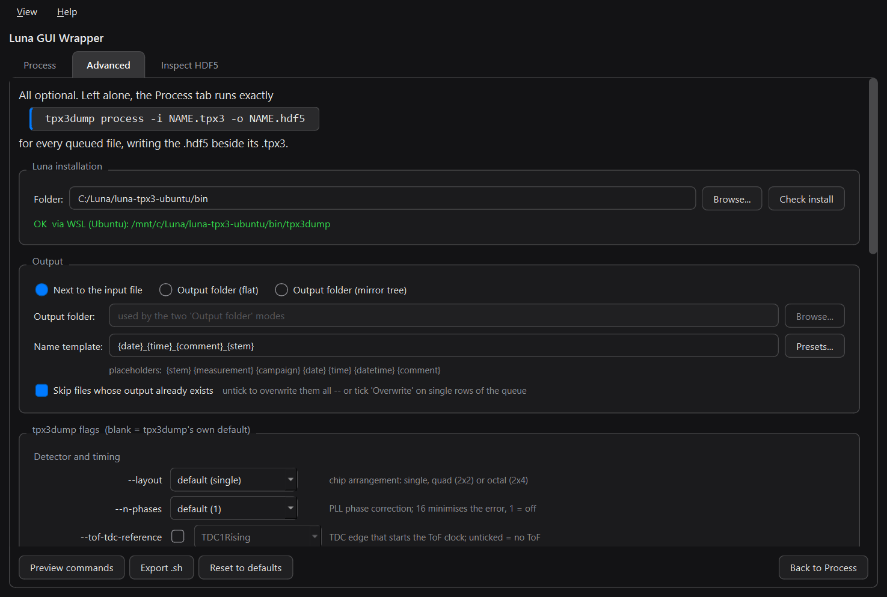

Usage
First run
On the Process tab, pick the Detector: Timepix3 or Timepix4.
Open the Advanced tab (or press Set up Luna… on the Process tab) and browse to your Luna folder: the install root, its
binfolder, or, for ASI’s Timepix4 archive, the outer folder that holds a same-named folder. It is remembered per detector, so this is a one-time step.Check install proves the backend works and prints the authoritative flag list for the extra arguments box.
Back on Process, the status line reads Ready and the setup button disappears. From then on you never need the Advanced tab again.
Everything on the Advanced tab is optional; this is what it looks like once Luna is configured:

Worked examples
They all use this campaign layout, which is the one ASI’s acquisition software
writes: one folder per measurement, with the metadata beside a raw/ folder
that holds the raw file. The examples use Timepix3; Timepix4 works the same
way with .tpx4 (see example 9).
D:\tpx3cam data\
data_DCR_07.08.2026\
Measurement_Aug_07_2026_12h52m45s\
measurement_metadata.json
comment.txt
raw\
fCqk_000000.tpx3
Measurement_Aug_07_2026_13h10m02s\
... raw\fDK5_000000.tpx3
Measurement_Aug_07_2026_14h31m40s\
... raw\gA7p_000000.tpx3
data_TDC_08.08.2026\
Measurement_Aug_08_2026_09h05m11s\
... raw\hQ2m_000000.tpx3
1. Process a whole campaign folder
Process tab → Add folders… → Browse… →
D:\tpx3cam data\data_DCR_07.08.2026.Leave Search subfolders ticked (it is what reaches the
.tpx3inside eachraw\) → Add to batch.Run queue.
The GUI walks the whole tree, queues every .tpx3 it finds (.TPX3 too), and
logs what it found:
Scanned 1 folder(s): 3 file(s) queued, 3 new
Files found lists each input with the output name it will get. The files
run one at a time, with the converter’s own output streamed into the log. With
the default settings each .hdf5 is written next to its raw file, named after
the measurement rather than the ASI stem:
Measurement_Aug_07_2026_12h52m45s\raw\
fCqk_000000.tpx3
2026-08-07_12-52-45_DCR-0V-gain_fCqk_000000.hdf5
The date, time and comment come from measurement_metadata.json. See
Name templates for the other fields you can use.
2. Many folders at once
In the same Add folders… dialog, click Browse… repeatedly, or paste paths into the box, one per line. Explorer’s Copy as path, quotes and all, pastes as-is:
"D:\tpx3cam data\data_DCR_07.08.2026"
"D:\tpx3cam data\data_TDC_08.08.2026"
Scanned 2 folder(s): 4 file(s) queued, 4 new
Folders to process shows each folder with its raw-file count. The list is remembered between sessions, so the next time you open the GUI the batch is already there. A folder added twice, or a file reachable through two folders, is queued only once. Clear empties the folder list and the queue.
On Windows, Browse… is Explorer’s own folder picker, so Alt+D, pasting into its address bar and Quick Access all work. You can also drag folders from Explorer into the paste box.
3. Keep up with a live campaign: Rescan
A measurement that is still acquiring has no measurement_metadata.json yet,
so it can only be named after its ASI stem. Suppose one appears mid-campaign:
Scanned 2 folder(s): 5 file(s) queued, 1 new
...\Measurement_Aug_08_2026_09h20m00s\raw\hZ9x_000000.hdf5
Once it finishes, press Rescan. Rescan is a full refresh: it picks up new files, drops queued rows whose input has since disappeared, and re-reads the metadata for every row:
Scanned 2 folder(s): 5 file(s) queued, 1 metadata refresh(es)
...\Measurement_Aug_08_2026_09h20m00s\raw\2026-08-08_09-20-00_laser-405nm-TDC_hZ9x_000000.hdf5
Then Run queue again. Because Skip files whose output already exists is
on by default, the files you already processed are marked
skipped - output exists and only the new one runs. Rescan, Run, repeat is
the whole routine for a running campaign. Only run a measurement once it has
finished, so the converter never reads a half-written file.
Rows that are running are never touched by a rescan, because their output path is already on the command line. Rows that are done or failed are records of something that already happened, so a rescan never deletes them.
4. Collect the outputs somewhere else
By default the outputs stay beside the raw data. The Advanced tab →
Output offers two alternatives. Both need an output folder, here
D:\processed.
Output folder (flat) puts every .hdf5 in that one folder:
D:\processed\
2026-08-07_12-52-45_DCR-0V-gain_fCqk_000000.hdf5
2026-08-07_13-10-02_DCR-0V-gain_fDK5_000000.hdf5
2026-08-07_14-31-40_DCR-50V_gA7p_000000.hdf5
2026-08-08_09-05-11_laser-405nm-TDC_hQ2m_000000.hdf5
Output folder (mirror tree) rebuilds the campaign structure under it,
dropping the raw\ level, which adds nothing once the data is processed:
D:\processed\
data_DCR_07.08.2026\
Measurement_Aug_07_2026_12h52m45s\
2026-08-07_12-52-45_DCR-0V-gain_fCqk_000000.hdf5
...
data_TDC_08.08.2026\
Measurement_Aug_08_2026_09h05m11s\
2026-08-08_09-05-11_laser-405nm-TDC_hQ2m_000000.hdf5
Missing folders are created as needed. Your raw files are never moved, renamed or modified.
If a template makes two inputs produce the same name, both rows are marked
CLASH and skipped rather than one overwriting the other. With
{date}_{comment} in flat mode, for example, fCqk and fDK5 would both
become 2026-08-07_DCR-0V-gain.hdf5. Keep {time} or {stem} in the
template to avoid this.
5. The same flags for the whole batch
On Advanced → tpx3dump flags, set for example --eps-t to 200ns and
tick --disable-clustering. On the Process tab the Advanced flags
button turns from grey to yellow and reads Advanced flags (2), so a
non-default run is never a surprise. Click it for the list, one setting per
row:
--eps-t 200ns
--disable-clustering
Preview commands prints the exact command line of every queued file without running anything. On Windows it reads:
wsl.exe -e /mnt/c/Luna/luna-tpx3-ubuntu/bin/tpx3dump process -i '/mnt/d/tpx3cam data/data_DCR_07.08.2026/Measurement_Aug_07_2026_12h52m45s/raw/fCqk_000000.tpx3' -o '/mnt/d/tpx3cam data/data_DCR_07.08.2026/Measurement_Aug_07_2026_12h52m45s/raw/2026-08-07_12-52-45_DCR-0V-gain_fCqk_000000.hdf5' --eps-t 200ns --disable-clustering
Every process option of the current converter has its own control, grouped
as Detector and timing, Clustering, Output file, Timewalk and
Performance and logging. Each has a one-line note beside it; hover it for
the details and the converter’s default. A few worth knowing:
--eps-tand--time-bin-intervaltake a unit:200ns,0.5s. A bare number is refused before anything runs.--layoutmust match the detector:single,quad(2x2) oroctal(2x4).Leaving
--tof-tdc-referenceunticked means no ToF at all, not a default edge.--num-time-binsand--time-bin-intervaltrade speed against memory; they do not change the output.--raw-onlyskips sorting and clustering;--disable-clusteringstill sorts.The Blosc compression algorithms need the
hdf5pluginpackage for h5py, and so for the Inspect tab, to read the file.Deflateworks anywhere.
extra arguments is passed verbatim after them, for anything a newer Luna
adds. Check install prints process --help, the authoritative list for
your Luna version.
6. Redo some files, not all
When outputs already exist, Run queue skips them. To redo particular
files, tick Overwrite on their rows in Files found. The checkbox in the
column header ticks or clears every row whose output exists. Untick Skip
files whose output already exists on the Advanced tab to overwrite
everything; Advanced flags then lists OVERWRITING existing output.
Redo the failures. A file that fails gets a FAILED line in the log with
its cause and what to change, and its row shows the cause too (hover it for
the advice). The end of the run sums the failures up by cause. Once anything
has failed, Rerun failed (N), above the Overwrite column, turns yellow. It
lists each cause with the fix and warns when a cause still holds with the
current settings, for example output names still over 255 characters. It
then ticks Overwrite where a failed run left a partial .hdf5 and runs
the failed files only; every other row is left alone.
The log is kept whole for the session, however long the batch. Save log… writes it to a text file.
7. Build the batch on Windows, run it on a Linux machine
For a long campaign, you may prefer to run on a Linux workstation or server. Build the queue as usual, then Advanced → Export .sh. You get a self-contained script with your paths translated, your flags applied, and the input and output roots pulled out into variables to edit on the other machine:
#!/usr/bin/env bash
# Generated by Luna GUI Wrapper -- run this on the Linux machine.
#
# 1. Put the Luna bin/ directory on PATH, or set TPX3DUMP below
# to the absolute path of the tpx3dump executable.
# 2. Edit IN_ROOT / OUT_ROOT to match where the data lives there.
set -euo pipefail
TPX3DUMP=${TPX3DUMP:-tpx3dump}
IN_ROOT='/mnt/d/tpx3cam data'
OUT_ROOT=/mnt/d/processed
mkdir -p "$(dirname "$OUT_ROOT"/data_DCR_07.08.2026/Measurement_Aug_07_2026_12h52m45s/2026-08-07_12-52-45_DCR-0V-gain_fCqk_000000.hdf5)"
"$TPX3DUMP" process -i "$IN_ROOT"/data_DCR_07.08.2026/Measurement_Aug_07_2026_12h52m45s/raw/fCqk_000000.tpx3 -o "$OUT_ROOT"/data_DCR_07.08.2026/Measurement_Aug_07_2026_12h52m45s/2026-08-07_12-52-45_DCR-0V-gain_fCqk_000000.hdf5 --eps-t 200ns --disable-clustering
...
This works even where the converter cannot run, for example on a Windows PC without WSL.
8. TDC columns on every output
Timepix3 only. Advanced → Wrapper options → tick Add TDC columns to
each output .hdf5 and pick the reference edge. After tpx3dump finishes
each file, the GUI tags every pixel hit and cluster with the TDC edge it
follows, in the same batch. The row’s note then reads, for example,
412.0 MB in 38.2s, TDC TDC1Rising (1,204,733 rows). See TDC for
what is written and how to read it back.
9. Timewalk-corrected times on every output
Advanced → Wrapper options → tick Timewalk-correct each output
.hdf5. After the converter finishes each file, the GUI measures the
timewalk curve from that file’s own clusters and writes corrected cluster
times as a last column of Clusters (ctoa_tw), plus the curve itself. No TDC is
needed, and dark-count data works as well as a focused spot. Tick also
every pixel hit for a corrected time per hit too. See
Timewalk correction.
10. Timepix4
On the Process tab, Detector → Timepix4. Then, once: Advanced
→ Luna installation → Browse… to your Timepix4 Luna, for example
C:\...\Luna\luna-tpx4-ubuntu-24.04-v0.4.4. ASI’s archive unpacks into a
folder holding a same-named folder; either works, as does its bin. From
there it is the same routine: Add folders…, Run queue. A folder scan
now queues .tpx4 files, and each runs as
tpx4dump process -i NAME.tpx4 -o NAME.hdf5
Switching detector swaps the whole setup (Luna folder, batch folders), and switching back restores it. The switch is locked during a run.
The Advanced tab shows only the flags the current converter accepts, and hides the TDC columns option on Timepix4. See Timepix3 and Timepix4 for the differences.
tpx4dumplogs an[ERROR] ... Packet is ignoredline for every packet it drops: 212,706 of them for one 84 MB file. That is Luna’s output; the file is still written. The log shows the first 20 lines of each kind and counts the rest, ending the file with a line such as(115,652 more lines like this were not shown: ...).
Name templates
Default is {date}_{time}_{comment}_{stem}, built from
measurement_metadata.json and comment.txt in the measurement folder:
2026-08-07_12-52-45_DCR-0V-gain_fCqk_000000.hdf5
The time is in there because a campaign routinely puts many measurements in one
day under the same comment: on 2026-08-07 alone, fCqk_000000 and
fDK5_000000 are both DCR-0V-gain, and without {time} the only thing
telling them apart is the ASI stem. {time} is written 12-52-45, not
12:52:45, because a colon is not legal in a Windows filename.
Changing this default migrates an existing config only if its template is still one this program shipped as a default. A template you chose yourself is never overwritten.
Placeholder |
Example |
Source |
|---|---|---|
|
|
raw filename |
|
|
folder |
|
|
folder |
|
|
|
|
|
|
Presets… beside the template field offers ready-made combinations.
Placeholders with no value drop out and the separators collapse. If two inputs
would produce the same output name, both rows are marked CLASH and skipped:
a rename tool that silently overwrites half your batch is worse than none.